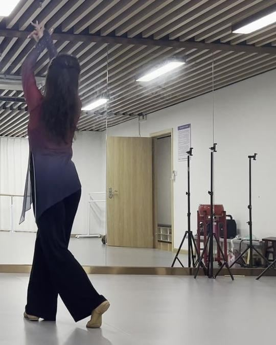
012s托
起势上托
脚并步站，重心在一条腿，另一脚脚尖前点
手单臂上举到耳后，另一手垂在体侧
起手别耸肩，肩沉下去才好看
十六字 · 四句
把整支舞收成十六个字。
先立骨架，再去看每一拍怎么填。
四字一句，念出来打拍子。念顺了，动作就串上了。
不是记性差，是记的方式不对。
每张卡只记三件事：脚踩哪、重心在哪、手在哪。手指和眼神先别管。
左右我故意没写死——对着镜子练时最容易把左右绕晕，按「前/后/旁/交叉 + 重心」记反而更牢。

012s脚并步站，重心在一条腿，另一脚脚尖前点
手单臂上举到耳后，另一手垂在体侧
起手别耸肩，肩沉下去才好看
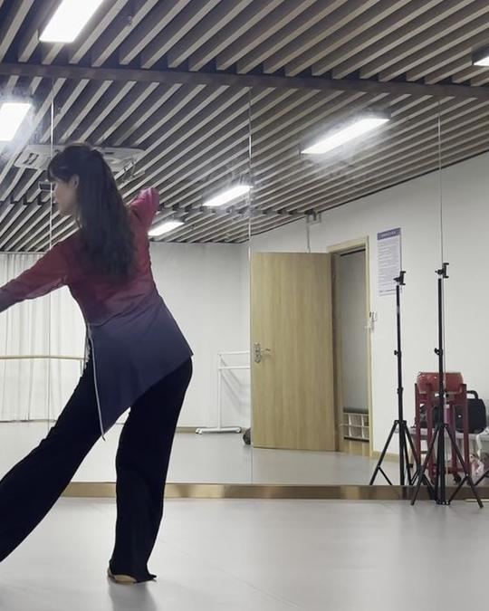
026s脚一腿屈膝承重，另一腿向斜前伸直、脚尖点地
手双臂一前一后，拉成一条斜线
转的是上身，脚下先别抢
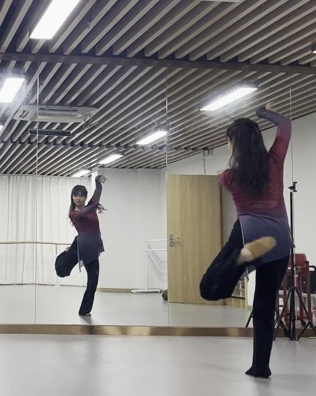
0310s脚单腿立，另一膝提到腰高、绷脚
手双手在头顶上方合抱
立腿要直，胯别往外翻
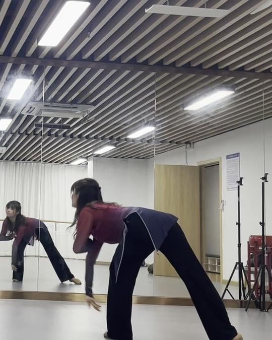
0414s脚前后大开，前腿屈、后腿直
手双手顺势落到膝前下方
从胯折，不是从腰弯
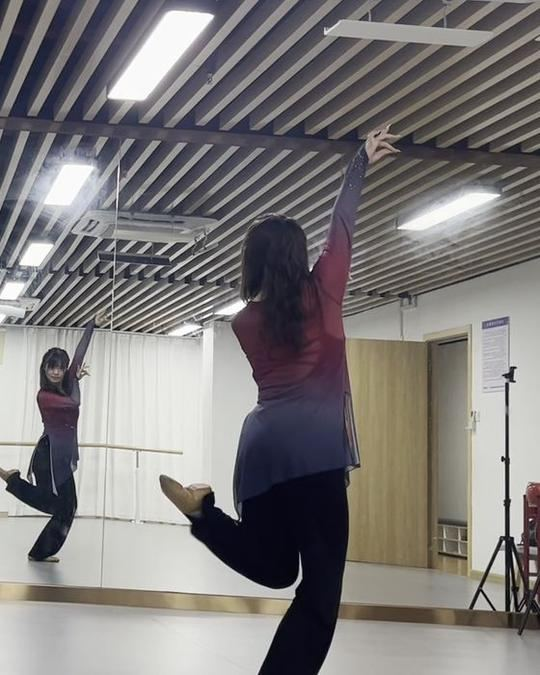
0518s脚后腿向后屈膝抬起
手一臂上举、一臂侧平
挑腿时胸口往上顶，别低头
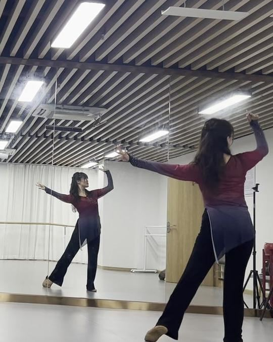
0621s脚大八字步，重心居中
手双臂侧平打开，手心向下
到手平就停，别抬过头
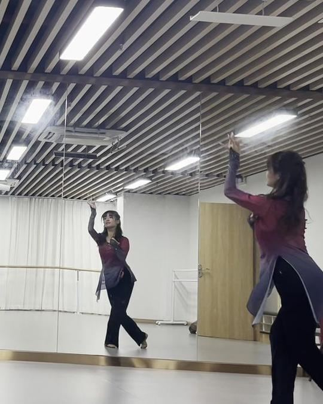
0722s脚重心回单腿，另一脚前点
手双手收到胸前抱圆
像抱个气球，肘别夹死
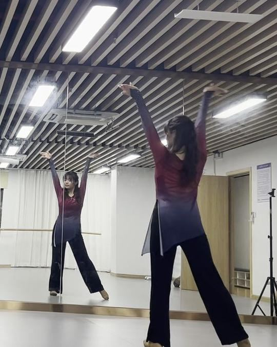
0824s脚双腿大开，重心居中
手双臂上举成 V
举到耳后，别夹脖子
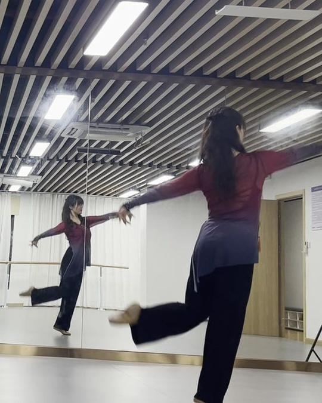
0927s脚后腿伸直向后抬起
手双臂侧平
上身立住，别跟着趴
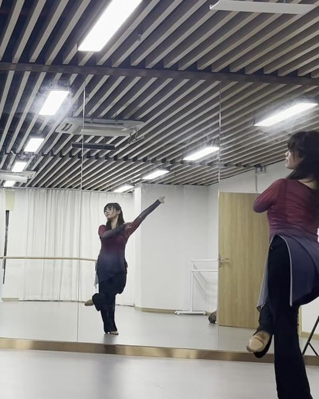
1031s脚交叉步移动——这一步是走位
手一手斜上托，一手在胯旁
先认方向，再管手
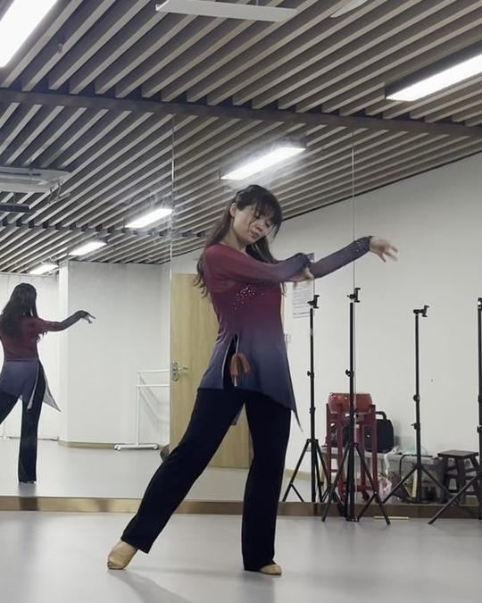
1134s脚弓步，重心在前腿
手双手在体侧划圆、抱回
手走圆线，别走折线
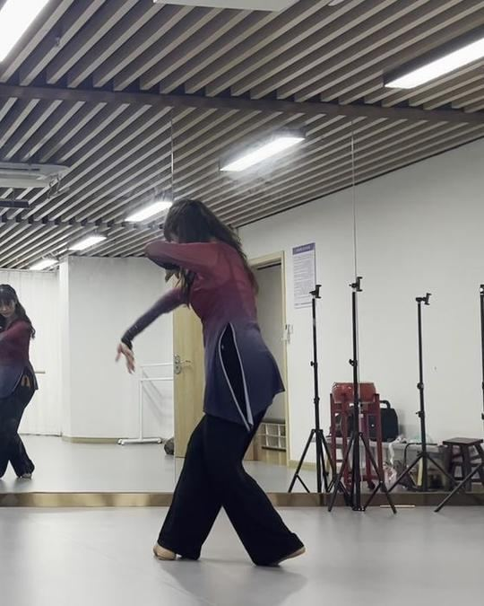
1239s脚踏步并拢
手双手收到身前落下
「收」要收住，不是随手放下
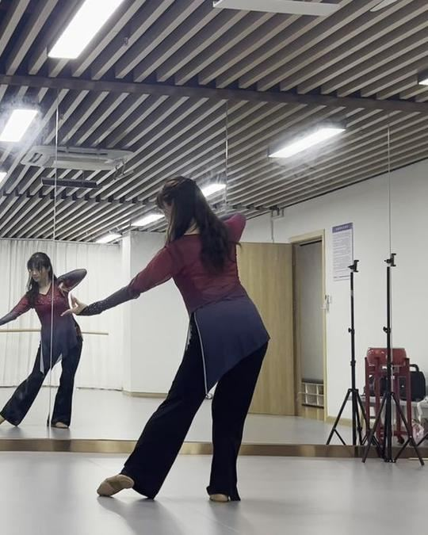
1343s脚弓步，上身前倾
手双臂向两侧平开
前倾时尾椎别翘出去
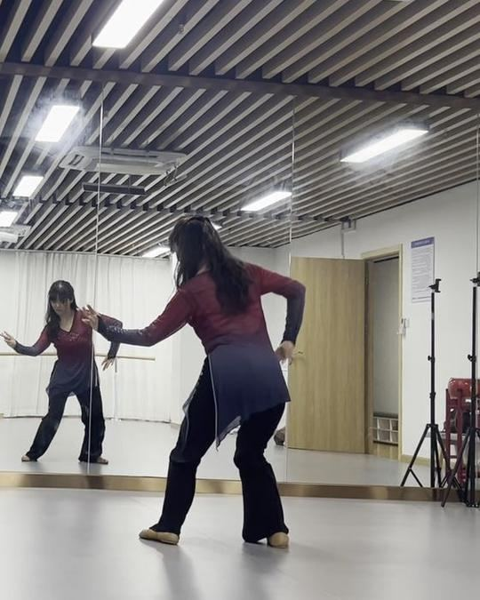
1446s脚双脚交叉，半蹲
手双手在身前合抱
蹲靠大腿，别塌腰
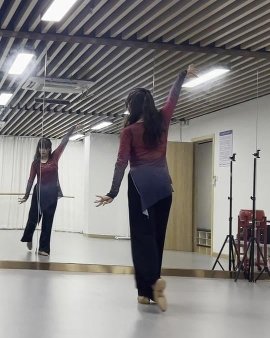
1547s脚双脚交叉站住
手单臂上举，另一手垂在体侧
先把交叉步踩稳，再抬手
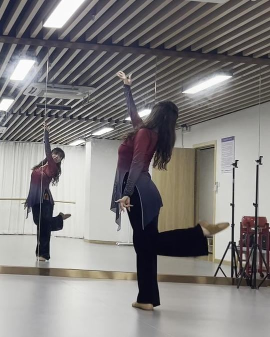
1650s脚后腿伸直抬到腰高，立腿绷直
手单臂上举
定住 3 秒不晃，再收势
按顺序来，别跳步。每一步都是下一步的前提。